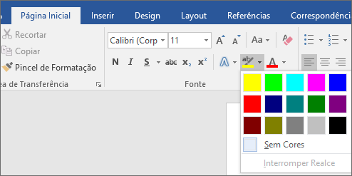

Faixa de Opções:
- 1. Barra de Título: Localizada no topo da janela, a barra de título exibe o nome do documento atual e o nome do programa ("Microsoft Word").
- 2. Cinta de Opções: Logo abaixo da barra de título, encontrará a cinta de opções. Esta barra contém separadores como "Arquivo", "Página Inicial", "Inserir", "Design", "Referências", "Rever", "Exibição" e "Ajuda". Cada separador agrupa ferramentas relacionadas para trabalhar com o documento.
- 3. Botões de Controle (Minimizar, Maximizar, Fechar)
- 4. Barra de Acesso Rápido: Localizada no canto superior esquerdo e contém atalhos para funções comuns como salvar, desfazer e refazer. Pode personalizar esta barra adicionando as suas ferramentas favoritas.
- 5. Área de Trabalho (documento): A área central da janela é onde cria e edita o seu documento. Aqui verá o conteúdo do documento, como texto, imagens, tabelas, etc.
- 6. Barra de Estado: Na parte inferior da janela, a barra de estado mostra informações sobre o documento, como o número da página atual, a contagem de palavras, o idioma, etc.
- 7. Barra de Rolagem: À direita (ou abaixo, se necessário) da área de trabalho, encontrará as barras de rolagem vertical e horizontal que permitem navegar pelo documento.
- 8. Menu Contextual: Ao clicar com o botão direito do rato dentro da área de trabalho, surge um menu contextual que oferece ações rápidas relacionadas com a seleção.
- 9. Vista do Documento: Pode alternar entre diferentes vistas de documento (como Layout de Impressão, Layout de Leitura, Esquema, etc.) utilizando as opções no canto inferior direito da janela.
Alterar o tipo de fonte:
Clique na seta ao lado do quadro de fontes para escolher e visualizar diferentes tipos de fontes.Alterar tamanho de fonte:
Clique na seta ao lado do quadro de tamanho de fonte para escolher diferentes tamanhos.Alterar a cor da fonte:
Clique na seta para exibir a paleta de cores e escolha uma para o seu texto.Destacar texto:
Utilize a opção de destaque para ressaltar partes importantes do seu documento.

Aplicar Negrito, Itálico e Sublinhado:
Selecione o texto e clique nas opções correspondentes para aplicar estes estilos.Mudar para maiúsculas e minúsculas:
Use o comando 'Mudar para maiúsculas' para alterar o caso do texto selecionado.Alinhamento de Texto:
Escolha entre alinhar o texto à esquerda, centrar, alinhar à direita ou justificar.